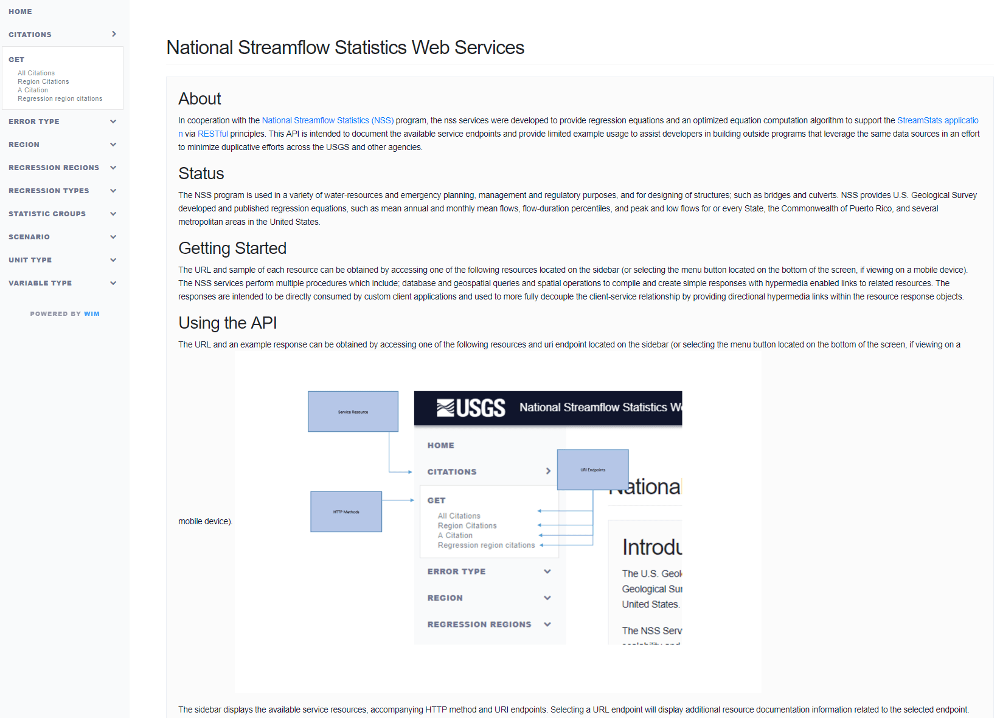
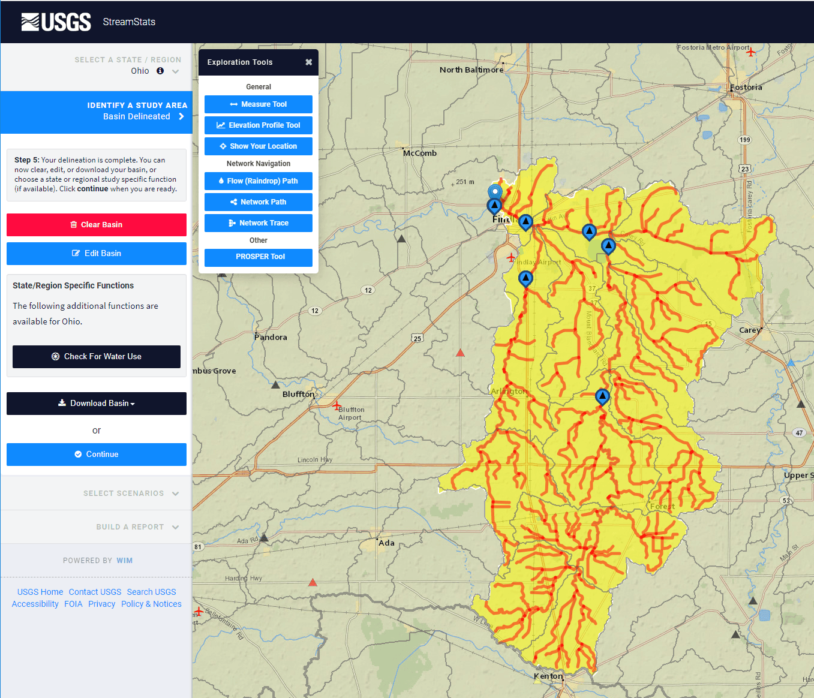
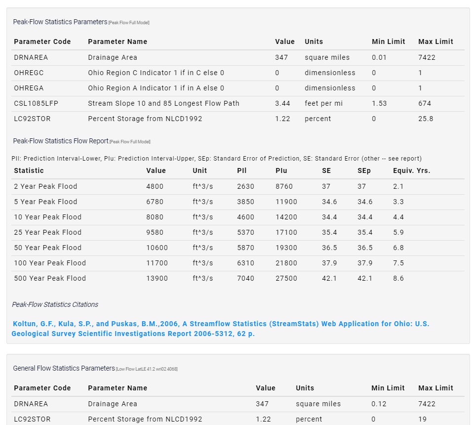

StreamStats is a Web-based Geographic Information
Systems (GIS) application that provides users with access to an assortment of analytical tools that are useful for a variety of water-resources planning and management purposes, and for engineering and design purposes. StreamStats users can select USGS data-collection station locations shown on a map and obtain previously published information for the stations. Users also can select any location along a stream and obtain the drainage-basin boundary, basin characteristics, and estimates of streamflow statistics for the location. The streamflow statistics that StreamStats can provide for data-collection stations and for user-selected ungaged sites vary among the implemented states and among data-collection stations within states.
WIM began collaborating with the USGS Water Mission Area StreamStats development team in 2014, and has since taken the technical and architecture lead in web development. To keep StreamStats on the forefront of web technology, WIM has moved StreamStats away from a proprietary monolithic application to an ecosystem of web applications and services allowing for more flexibility and extensibility. Adapting an industry-standard database, web service, and client architecture model has allowed development of numerous APIs and clients to allow for external development on this key system as well better integration possibilities within the USGS. WIM looks forward to continued involvement in the project, adding additional features and functionality to StreamStats as well as integrating with other Water Mission Area systems and services.
WIM began collaborating with the USGS Water Mission Area StreamStats development team in 2014, and has since taken the technical and architecture lead in web development. To keep StreamStats on the forefront of web technology, WIM has moved StreamStats away from a proprietary monolithic application to an ecosystem of web applications and services allowing for more flexibility and extensibility. Adapting an industry-standard database, web service, and client architecture model has allowed development of numerous APIs and clients to allow for external development on this key system as well better integration possibilities within the USGS. WIM looks forward to continued involvement in the project, adding additional features and functionality to StreamStats as well as integrating with other Water Mission Area systems and services.
Primary StreamStats Client Interface showing large basin in IA

API documentation for National Streamflow Statistics

Upstream flow trace from pourpoint in an OH basin

Flow Statistics available in Streamstats report